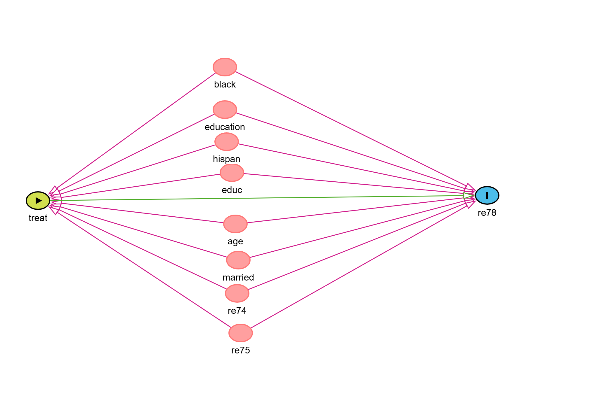
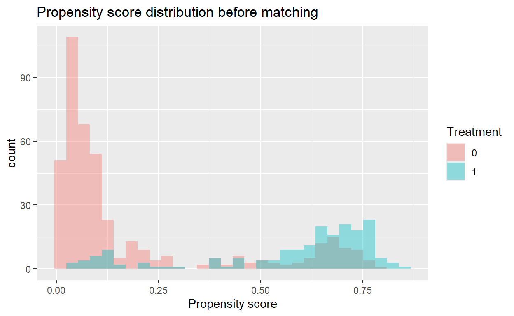

Introduction
In randomized control trials, treatment assignment is random and independent of potential confounders. Ignorability or exchangebility assumption are fulfilled. Determining average causal effects is, therefore, straightforward. However, in observational studies treatment assignment is not random. This makes determining the causal effects of treatment difficult. Individuals get assigned to certain treatment based on their conditions or background characteristics. These characteristics will influence both treatment and outcome and create confounding. There fore the estimated effects sizes will be biased and may be far from causal effects
Let
- \(T \in \{0,1\}\) be the treatment,
- \(Y\) be the observed outcome,
- \(X\) be the set of baseline covariates,
- \(Y(1)\) and \(Y(0)\) be potential outcomes under treatment and control.
The individual level causal effect is
\[ \tau = Y(1) - Y(0) \]
but only one potential outcome is observed for each individual.This is the fundamental problem of potential outcomes scenario.
If we compare outcomes without adjustment:
\[ E[Y \mid T=1] - E[Y \mid T=0] \]
the difference is generally biased because the groups differ in covariates.
Confounding as a backdoor path
A confounder affects both treatment and outcome. This creates a backdoor path:
\[ T \leftarrow X \to Y \]
To identify causal effects, we assume conditional exchangeability:
\[ Y(1), Y(0) \perp T \mid X \]
meaning that, being assigned to either of the treatment arms is as good as random assignment given the set of potential confounders(X).Therefore, after properly adjusting for relevant covariates(potential confounders), treatment assignment can be close to or as good as random. This is called conditional exchangeabilty or conditional ignorability or causal sufficiency.
The propensity score matching method
Propensnsity score is the probality of being asigned to treatment. More formally, the propensity score (Rosenbaum and Rubin 1983) is defined as:
\[ e(X) = P(T = 1 \mid X) \]
If exchangeability holds given𝑋, then it also holds given the scalar \[e(X)\]
\[ Y(1), Y(0) \perp T \mid e(X) \]
This means that conditioning on a single scalar(score) \(e(X)\) is sufficient to remove confounding due to all observed covariates in \(X\).
Goal of Propensity Score Matching
Propensity Score Matching (PSM) matches treated individuals with control individuals using propensity scores, creating a balanced sample. After matching, the Average Treatment Effect on the Treated (ATT) is simply estimated as:
\[ ATT = E[Y(1) - Y(0) \mid T = 1] \]
For this tutorial, I will use the Lalonde Dataset. The data sets has 445 observations with 185 treated and 260 control subjects, and 10 variables.
treatment(1 = treated; 0 = control) (Training program)age, measured in years;education, measured in years;black, indicating race (1 if black, 0 otherwise);hispanic, indicating race (1 if Hispanic, 0 otherwise);married, indicating marital status (1 if married, 0 otherwise);nondegree, indicating high school diploma (1 if no degree, 0 otherwise);re74, real earnings in 1974;re75, real earnings in 1975.
The last variabele is treatment , the real the earnings in 1978. That
is our outcome variable. You may take a look at the datasets and the
source
here.
Before we dive into the analysis, we will construct the DAG for this. We
want to see whether the treatment (training program) has an effect on
earning(re78). To construct DAG, I used the web-based DAGITTY package.
You can also use the dagitty R-package. I found the web-version easier
to adjust the plot. We have a simple DAG plot. All of the 9 confounders
are connected to both treatment and the outcome, These are classic set
of confounders. The aim of matching is to block all backdoor paths from
treatment exposure( treat) to outcome(re78) by balancing on these
covariates.

Mow let’s proceed to the analysis.
library(tableone) # for easy
library(Matching)
library(MatchIt)
data(lalonde) #load the dataset
df <- lalonde
table(df$race)
black hispan white
243 72 299 # Create race indicators
df$black <- as.numeric(df$race == "black")
df$hispan <- as.numeric(df$race == "hispan")
# Confounders: let's call them xvars
xvars <- c("age", "educ", "black", "hispan",
"married", "nodegree", "re74", "re75")
# Table 1 before matching
table1_before <- CreateTableOne(vars = xvars, data = df, strata = "treat", test = FALSE)
print(table1_before, smd = TRUE) Stratified by treat
0 1 SMD
n 429 185
age (mean (SD)) 28.03 (10.79) 25.82 (7.16) 0.242
educ (mean (SD)) 10.24 (2.86) 10.35 (2.01) 0.045
black (mean (SD)) 0.20 (0.40) 0.84 (0.36) 1.668
hispan (mean (SD)) 0.14 (0.35) 0.06 (0.24) 0.277
married (mean (SD)) 0.51 (0.50) 0.19 (0.39) 0.719
nodegree (mean (SD)) 0.60 (0.49) 0.71 (0.46) 0.235
re74 (mean (SD)) 5619.24 (6788.75) 2095.57 (4886.62) 0.596
re75 (mean (SD)) 2466.48 (3292.00) 1532.06 (3219.25) 0.287The standardized mean differences show imbalance in several baseline covariates. This is why we need to balance. PSM is needed.
Greedy Matching on Covariates
Greedy matching also known as nearest neighbor matching. It uses Mahalanobis distance, Euclidean distance or propensity scores. Fore more details, check the Matchit package
greedy_match <- Match(Tr = df$treat, M = 1, X = df[xvars])
matched1 <- df[unlist(greedy_match[c("index.treated", "index.control")]),]
table_greedy <- CreateTableOne(vars = xvars, data = matched1,
strata = "treat", test = FALSE)
print(table_greedy, smd = TRUE) Stratified by treat
0 1 SMD
n 207 207
age (mean (SD)) 24.60 (8.14) 25.04 (7.14) 0.058
educ (mean (SD)) 10.45 (1.91) 10.35 (1.95) 0.050
black (mean (SD)) 0.85 (0.36) 0.86 (0.35) 0.014
hispan (mean (SD)) 0.05 (0.22) 0.05 (0.22) <0.001
married (mean (SD)) 0.17 (0.38) 0.17 (0.38) <0.001
nodegree (mean (SD)) 0.71 (0.46) 0.71 (0.46) <0.001
re74 (mean (SD)) 1930.36 (4062.55) 1877.00 (4662.18) 0.012
re75 (mean (SD)) 1000.14 (2333.95) 1377.81 (3076.01) 0.138As you can see, greedy matching has already greatly achieved matching. However, matching directly on the covariates improves balance but may not be optimal. Propensity score matching usually performs better.
Estimate the Propensity Score
Estimating propensity score is simply done by doing logistic regression of treatment variable on the set of confounders.
Check overlap
library(ggplot2)
ggplot(df, aes(x = pscore, fill = factor(treat))) +
geom_histogram(alpha = 0.4, position = "identity", bins = 30) +
labs(title = "Propensity score distribution before matching",
fill = "Treatment", x = "Propensity score")
Then let’s do the matching and check the plot after matching
m.out1 <- matchit(treat ~ age + educ + black + hispan + married +
nodegree + re74 + re75,
data = df, method = "nearest")
summary(m.out1)
Call:
matchit(formula = treat ~ age + educ + black + hispan + married +
nodegree + re74 + re75, data = df, method = "nearest")
Summary of Balance for All Data:
Means Treated Means Control Std. Mean Diff. Var. Ratio
distance 0.5774 0.1822 1.7941 0.9211
age 25.8162 28.0303 -0.3094 0.4400
educ 10.3459 10.2354 0.0550 0.4959
black 0.8432 0.2028 1.7615 .
hispan 0.0595 0.1422 -0.3498 .
married 0.1892 0.5128 -0.8263 .
nodegree 0.7081 0.5967 0.2450 .
re74 2095.5737 5619.2365 -0.7211 0.5181
re75 1532.0553 2466.4844 -0.2903 0.9563
eCDF Mean eCDF Max
distance 0.3774 0.6444
age 0.0813 0.1577
educ 0.0347 0.1114
black 0.6404 0.6404
hispan 0.0827 0.0827
married 0.3236 0.3236
nodegree 0.1114 0.1114
re74 0.2248 0.4470
re75 0.1342 0.2876
Summary of Balance for Matched Data:
Means Treated Means Control Std. Mean Diff. Var. Ratio
distance 0.5774 0.3629 0.9739 0.7566
age 25.8162 25.3027 0.0718 0.4568
educ 10.3459 10.6054 -0.1290 0.5721
black 0.8432 0.4703 1.0259 .
hispan 0.0595 0.2162 -0.6629 .
married 0.1892 0.2108 -0.0552 .
nodegree 0.7081 0.6378 0.1546 .
re74 2095.5737 2342.1076 -0.0505 1.3289
re75 1532.0553 1614.7451 -0.0257 1.4956
eCDF Mean eCDF Max Std. Pair Dist.
distance 0.1321 0.4216 0.9740
age 0.0847 0.2541 1.3938
educ 0.0239 0.0757 1.2474
black 0.3730 0.3730 1.0259
hispan 0.1568 0.1568 1.0743
married 0.0216 0.0216 0.8281
nodegree 0.0703 0.0703 1.0106
re74 0.0469 0.2757 0.7965
re75 0.0452 0.2054 0.7381
Sample Sizes:
Control Treated
All 429 185
Matched 185 185
Unmatched 244 0
Discarded 0 0matched_df <- match.data(m.out1) # we create our full matched datsetThen check the plot after matching
ggplot(matched_df, aes(x = pscore, fill = factor(treat))) +
geom_histogram(alpha = 0.4, position = "identity", bins = 30) +
labs(title = "Propensity score distribution after matching",
fill = "Treatment", x = "Propensity score")
Let’s now check smd for the PSM-matched datasets.
table_psm_matched <- CreateTableOne(vars = xvars, data = matched_df,
strata = "treat", test = FALSE)
print(table_psm_matched, smd = TRUE) Stratified by treat
0 1 SMD
n 185 185
age (mean (SD)) 25.30 (10.59) 25.82 (7.16) 0.057
educ (mean (SD)) 10.61 (2.66) 10.35 (2.01) 0.110
black (mean (SD)) 0.47 (0.50) 0.84 (0.36) 0.852
hispan (mean (SD)) 0.22 (0.41) 0.06 (0.24) 0.466
married (mean (SD)) 0.21 (0.41) 0.19 (0.39) 0.054
nodegree (mean (SD)) 0.64 (0.48) 0.71 (0.46) 0.150
re74 (mean (SD)) 2342.11 (4238.98) 2095.57 (4886.62) 0.054
re75 (mean (SD)) 1614.75 (2632.35) 1532.06 (3219.25) 0.028Check covariate balance using Love plot
library(cobalt)
love.plot(m.out1, stats = "mean.diffs",
threshold = 0.1, abs = TRUE,
var.order = "unadjusted")
As you can see most standardized mean differences drop below 0.1 after matching. This shows good covariate balance is achieved and we can move on to our causal effect calculations.
Otcome analysis
We use paired t-test to evaluate the outcome data on our PSM-matched datset.
y_trt <- matched_df$re78[matched_df$treat == 1]
y_ctrl <- matched_df$re78[matched_df$treat == 0]
t.test(y_trt, y_ctrl, paired = TRUE)
Paired t-test
data: y_trt and y_ctrl
t = 1.1866, df = 184, p-value = 0.2369
alternative hypothesis: true difference in means is not equal to 0
95 percent confidence interval:
-592.7088 2381.4438
sample estimates:
mean of the differences
894.3675 The difference in means is the Average Treatment Effect on the Treated (ATT). This estimate reflects the causal effect of the training program on those who participated, under the assumption that all confounders have been adequately balanced.
PSM using caliper
Caliper matching prevents poor matches and often improves covariate balance even further. This is simply achieved by setting caliper value from the Match() function.
pscore1 <- df$pscore
psmatch2 <- Match(Tr = df$treat, M = 1, X = log(pscore1),
replace = FALSE, caliper = 0.1)
matched2 <- df[unlist(psmatch2[c("index.treated", "index.control")]),]
table_caliper <- CreateTableOne(vars = xvars, strata = "treat", test = FALSE,
data = matched2)
print(table_caliper, smd = TRUE) Stratified by treat
0 1 SMD
n 112 112
age (mean (SD)) 26.48 (11.00) 26.17 (7.18) 0.034
educ (mean (SD)) 10.53 (2.65) 10.31 (2.33) 0.086
black (mean (SD)) 0.72 (0.45) 0.74 (0.44) 0.040
hispan (mean (SD)) 0.12 (0.32) 0.10 (0.30) 0.058
married (mean (SD)) 0.26 (0.44) 0.24 (0.43) 0.041
nodegree (mean (SD)) 0.61 (0.49) 0.65 (0.48) 0.092
re74 (mean (SD)) 2540.45 (4532.75) 2156.96 (5627.20) 0.075
re75 (mean (SD)) 1813.48 (2756.73) 1063.68 (2619.06) 0.279From the smd, values setting the caliper has achieved a better balance but smaller sample size. More unmatched observations are dropped.
Now, outcome analysis after matching using caliper
y_trt <- matched2$re78[matched2$treat == 1]
y_ctrl <- matched2$re78[matched2$treat == 0]
t.test(y_trt, y_ctrl, paired = TRUE)
Paired t-test
data: y_trt and y_ctrl
t = 1.5011, df = 111, p-value = 0.1362
alternative hypothesis: true difference in means is not equal to 0
95 percent confidence interval:
-407.3564 2952.6555
sample estimates:
mean of the differences
1272.65 The mean of the differences 1300(95%CI: -340, 2942) is our final causal estimate. It tells us how much the training program increased the average post intervention earnings among participants.However, the 96%CI includes 0. Hence no causal effect of the treatment(training programs) on post intervention earnings!
In summary, we have seen observational treatment assignment creates confounding and the propensity score summarizes multiple confounders into a single scalar value and can help us achieve a matched dataset. This dataset can be much lower than the original unmatched dataset. Matching discards unmatched subjects (often many), leading to: reduced precision. weaker generalizability,and possibly losing a rare treatment subgroup. In contrast to PSM, Inverse Probability of Treatment Weighting (IPTW) offers an attractive alternative that avoids discarding subjects. Instead of removing unmatched individuals, IPTW reweights each observation by the inverse of its probability of receiving the treatment(1/propensity score value for treated and 1/(1-propensity score value for control subjects)) actually observed. That will be my next post.
After matching, the difference in outcomes can be interpreted as a causal effect for treated individuals.
If you have enjoyed reading this, consider subscribing for upcoming posts.